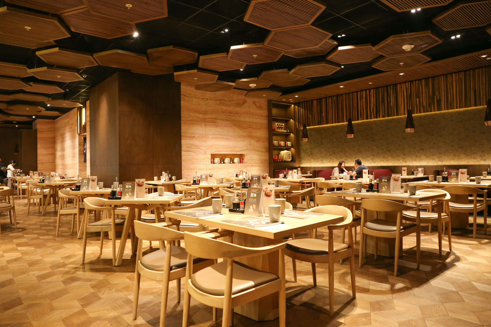

Sweet Cheeks is a family-run restaurant in the heart of Nairobi, serving Kenyan food made from recipes passed down through generations.
We believe great meals start with great ingredients. Every dish is prepared fresh daily using local produce, slow-cooked spices, and the kind of care you only get from a kitchen that feels like home. From smoky nyama choma to our famous ugali & tilapia/red snapper fish, we bring a taste of Kenya to every table.
Whether you're stopping by for a quick lunch, gathering with family, or celebrating something special, you'll always find a warm welcome and a plate that satisfies.
We source from nearby farms and markets whenever we can.
Every recipe is cooked from scratch, the way our grandmothers did.
Sweet Cheeks is more than a restaurant — it's a gathering place.
